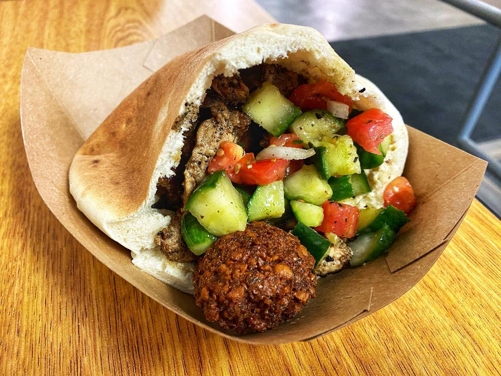

Greek Night Dinner

Description
Looking for something easy to make for a dinner party with friends? Well you've come to the right place! This meal will take ~45 mins to prep and cook and feeds as many as you need it to.
Ingredients
- Pita/Naan
- Chicken
- Teriyaki and Honey Garlic Sauce
- Cucumber
- Tomatoes
- Pepper
- Onion
- Feta
- Oil and Balsamic Vinegar
- Homemade Tzatziki:
- Plain Greek Yogurt
- Cucumber Shredded
- Dill
- Lemon
- Salt and Pepper
Steps
- Dice and cook the chicken.
- While the chicken is cooking prep the salad:
- Dice cucumbers.
- Cut tomatoes.
- Cut peppers.
- Add feta.
- Add oil and balsamic.
- To make the homemade tzatziki:
- Add greek yogurt to bowl.
- Shred cucumber and strain out juice, add shredded cucumber to yogurt.
- Season with dill, salt and pepper.
- Finally mix in lemon zest and juice from fresh lemon.
- Once chicken is cooked add honey garlic and teriyaki on low-medium heat.
- While the sauce and chicken caramelize, but the pita/naan in the oven on broil, cook to desired toastiness.
- Remove Naan from oven and add Tzatziki, chicken and salad as desired and enjoy!
Return Home